Project 2
Fun with Filters and Frequencies
Building intuition for convolution, image derivatives, and frequency-based image editing.
This project explores how small filters change an image. I start by implementing convolution from scratch, then use it to blur a portrait and measure brightness changes in the horizontal and vertical directions.
Part 1 · Fun with Filters
1.1 Convolutions from Scratch
A convolution moves a small grid of weights, called a kernel, across an image. At each position, the overlapping values are multiplied and summed to produce one output pixel. Before sliding, convolution flips the kernel horizontally and vertically. The output below uses zero padding at the image boundary.
Two NumPy implementations
Both implementations loop over output pixels. The four-loop version also loops over every kernel entry to calculate each pixel. The two-loop version uses NumPy to multiply and sum a whole image window at once.
def convolve(img, kernel, mode="same", loops=2):
h, w = img.shape
kh, kw = kernel.shape
kernel = kernel[::-1, ::-1] # flip vertically and horizontally
if mode == "same":
# Asymmetric padding handles even-sized kernels like SciPy.
padding = ((kh // 2, (kh - 1) // 2),
(kw // 2, (kw - 1) // 2))
out_shape = (h, w)
elif mode == "full":
padding = ((kh - 1, kh - 1), (kw - 1, kw - 1))
out_shape = (h + kh - 1, w + kw - 1)
else:
print("mode must be 'same' or 'full'")
return
padded = np.pad(img, padding, mode="constant", constant_values=0)
out = np.zeros(out_shape, dtype=np.float64)
for r in range(out_shape[0]):
for c in range(out_shape[1]):
if loops == 4:
for kr in range(kh):
for kc in range(kw):
out[r, c] += padded[r + kr, c + kc] * kernel[kr, kc]
elif loops == 2:
window = padded[r:r + kh, c:c + kw]
out[r, c] = np.sum(window * kernel)
else:
print("loops must be 2 or 4")
return
return outPortrait results
I converted my portrait to grayscale, then convolved it with a 9 × 9 box filter and the finite-difference filters Dx and Dy.
- Box filter: each of its 81 weights is 1/81, so each output pixel is the local average.
- Dx:
[[1, -1]], which measures horizontal brightness changes and highlights vertical edges. - Dy:
[[1], [-1]], which measures vertical brightness changes and highlights horizontal edges.
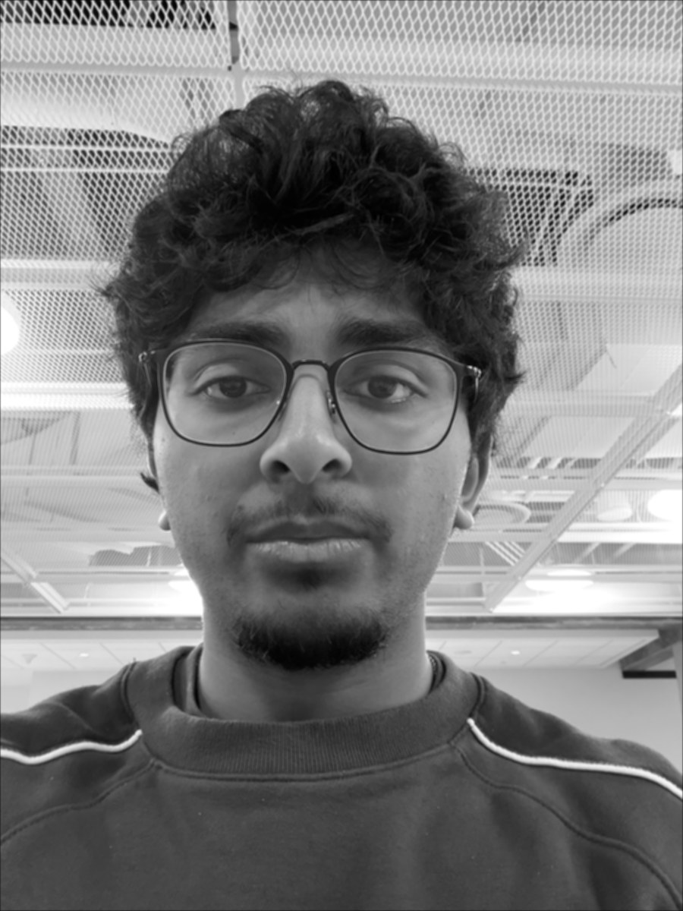
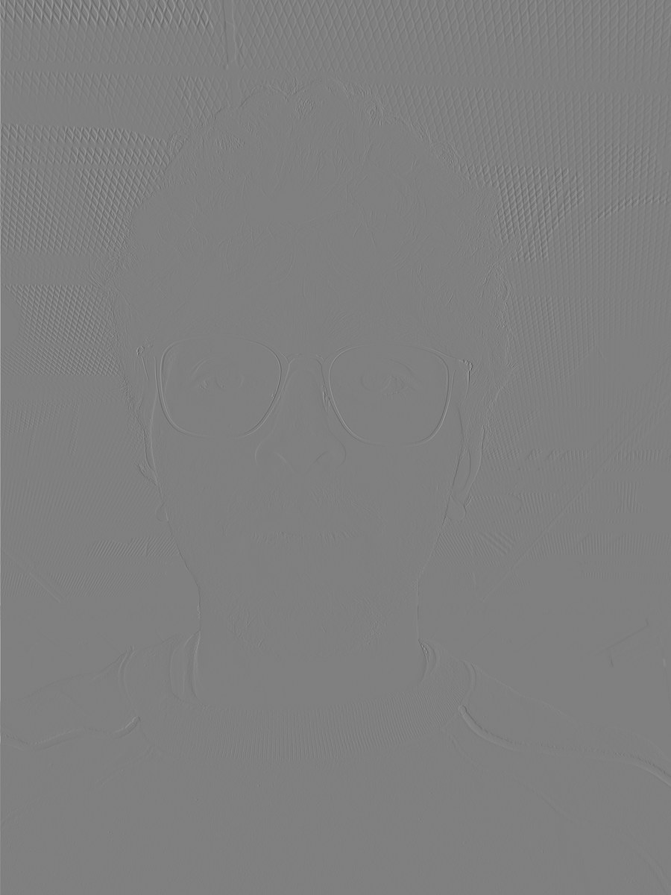
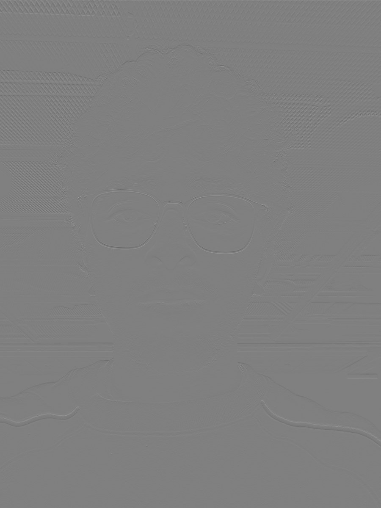
Comparison with SciPy
I compared the four-loop and two-loop NumPy outputs with scipy.signal.convolve2d using the same zero-filled boundaries. All three produced matching results to within 10−12.
| Implementation | Runtime |
|---|---|
| NumPy, four loops | 0.521 s |
| NumPy, two loops | 0.042 s |
SciPy convolve2d | 0.0021 s |
The two-loop version is about 12 times faster than the four-loop version here because NumPy performs each window calculation in compiled code. SciPy is about 20 times faster than the two-loop version.
from scipy.signal import convolve2d
reference = convolve2d(img, box, mode="same", boundary="fill", fillvalue=0)
np.testing.assert_allclose(convolve(img, box), reference)How boundaries are handled
For same output, zero padding lets the kernel cover edge pixels while keeping the output the same size as the input. Pixels outside the image are treated as black. This can darken the border after averaging; for a derivative filter, zero padding can also introduce a false brightness change at the edge. SciPy can use the same zero-filled boundary with boundary="fill", or other boundary rules such as symmetric reflection.
Part 1 · Fun with Filters
1.2 Finite Difference Operator
Here I apply the finite-difference operators to the cameraman image. Dx = [[1, -1]] measures brightness changes between neighboring columns, while Dy = [[1], [-1]] measures changes between neighboring rows. Strong responses mark places where the image changes quickly; the signed derivative images are displayed with zero mapped to middle gray.

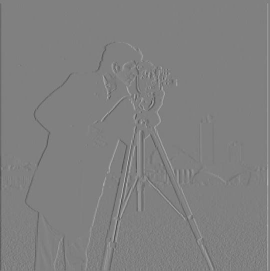
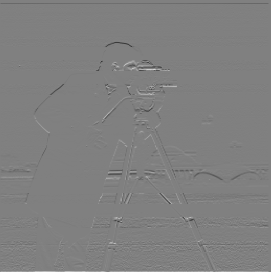
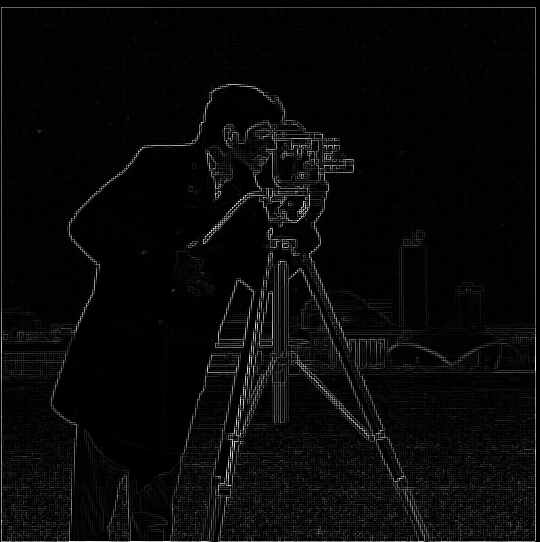
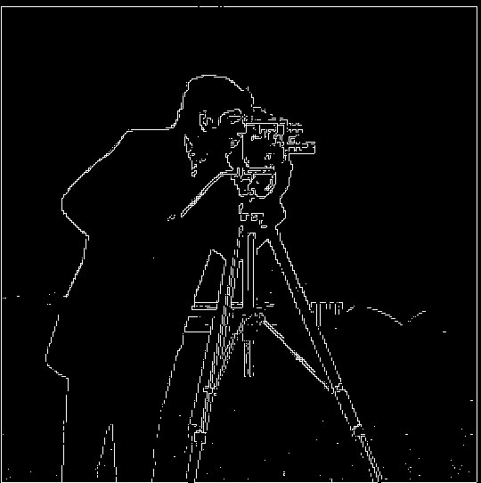
Gradient magnitude and thresholding
At each pixel, I combine the two directional responses as sqrt(Dx2 + Dy2). This gives a direction-independent measure of edge strength. To make a binary edge map, I a gradient magnitude threshold of 0.27. This threshold keeps the most visible boundaries while suppressing weaker texture and small brightness changes; raising it would produce fewer, cleaner edges, while lowering it would retain more detail and noise.
The convolutions use symmetric boundary handling, which reflects the image at its borders instead of padding with black. This keeps the two derivative calculations consistent and avoids introducing an artificial jump from the image to zero at the outer boundary.
Part 1 · Fun with Filters
1.3 Derivative of Gaussian (DoG) Filter
Finite differences respond strongly to tiny changes in brightness, including texture and noise. I first smooth the cameraman image with a 9 × 9 Gaussian filter (σ = 1.5), then apply Dx and Dy. Smoothing reduces small variations before measuring edges, so the resulting gradients are less noisy than the raw finite differences from Part 1.2.
Convolution is associative: (image * G) * D = image * (G * D). Therefore, blurring and then differentiating can be combined into a single convolution with a derivative-of-Gaussian filter. The filters below use G * Dx and G * Dy. Both paths use the same symmetric extension of the image boundary, and the computed x and y responses agree to numerical precision.
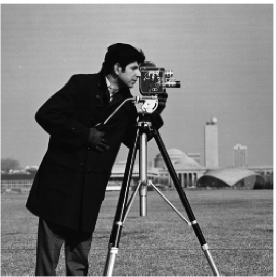
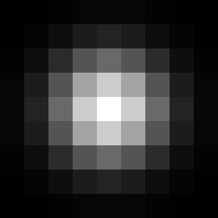
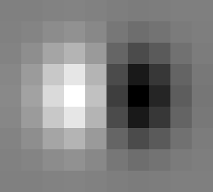
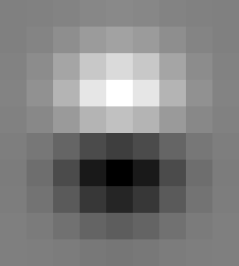
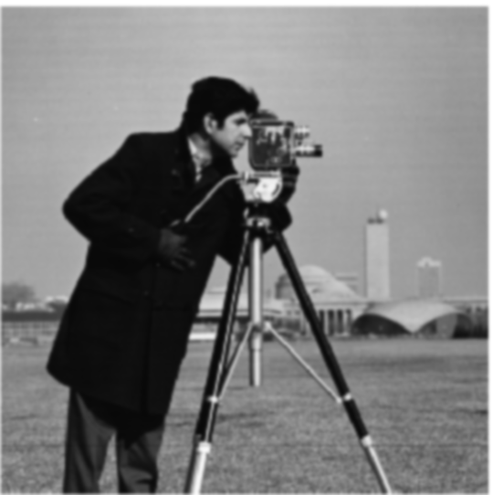
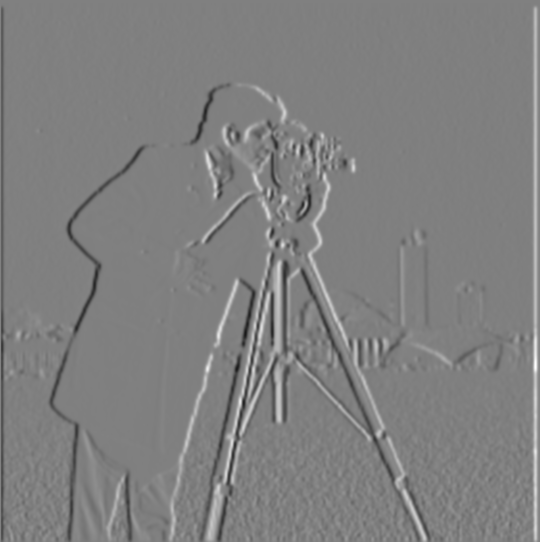
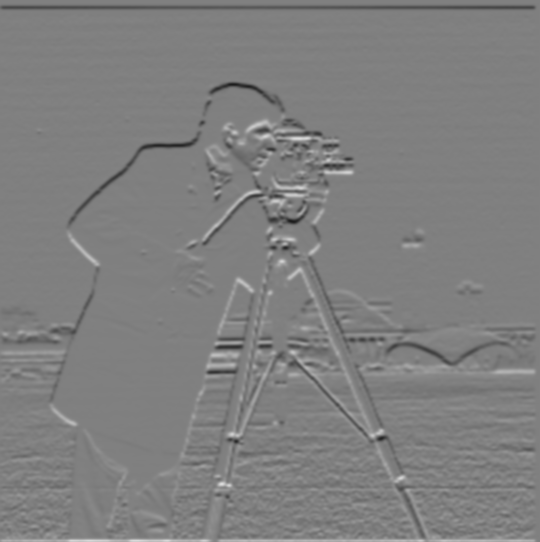


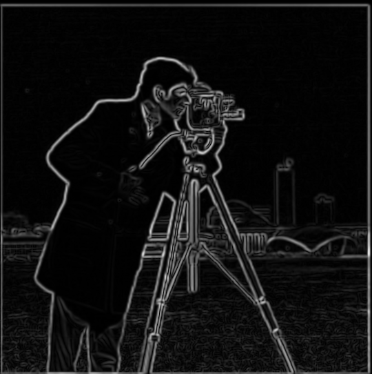
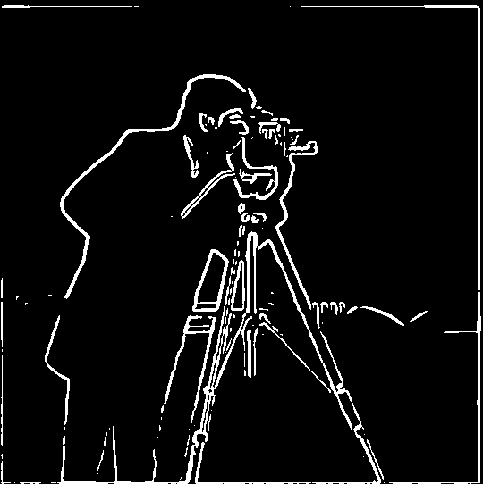


Comparing the two approaches
The upper result set shows the two-step process: blur first, then take finite differences. The single-pass DoG filters produce the same derivative responses, gradient magnitude, and thresholded edges. The raw Part 1.2 gradient magnitude and edge map are included for comparison: Gaussian smoothing suppresses fine texture, leaving stronger image boundaries more prominent.
For the smoothed results, I threshold the gradient magnitude at 0.08. The raw Part 1.2 map used 0.27; the thresholds differ because Gaussian smoothing changes the derivative response magnitudes. Pixels above the selected threshold appear white in each binary edge map.
Part 2 · Fun with Frequencies
2.1 Image Sharpening
A Gaussian blur keeps low-frequency structure while softening fine detail. Subtracting the blurred image from the original isolates high-frequency detail, such as edges and texture. Adding a scaled copy of that detail back makes the image appear sharper. With sharpening amount α, the result is I + α(I − I * G), which combines into one convolution using the unsharp-mask kernel (1 + α)δ − αG. Here G is a 9 × 9 Gaussian with σ = 1.5, and δ is the identity (impulse) filter.
The high-frequency images are display-scaled so zero is middle gray and positive or negative detail appears lighter or darker. This visualization scaling is not used in the sharpening calculation. I clip values to the valid image range only when saving the result.
Taj Mahal
The three sharpening amounts show the tradeoff: increasing α strengthens fine detail and edge contrast, but too much enhancement can create halos or clipped highlights.
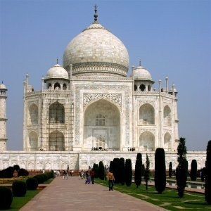
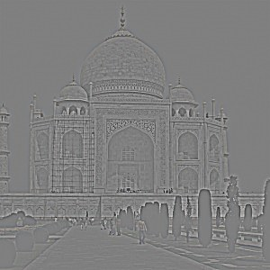
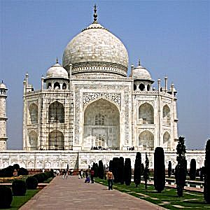
New York City
I also apply the same process to a second image. These results show the effect of varying α on the original sharp image.
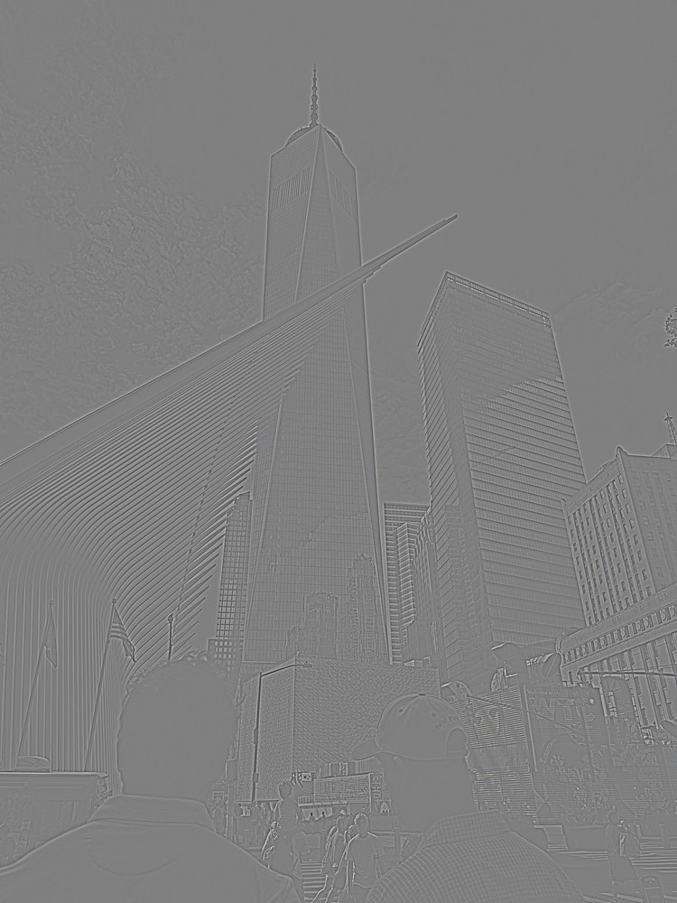
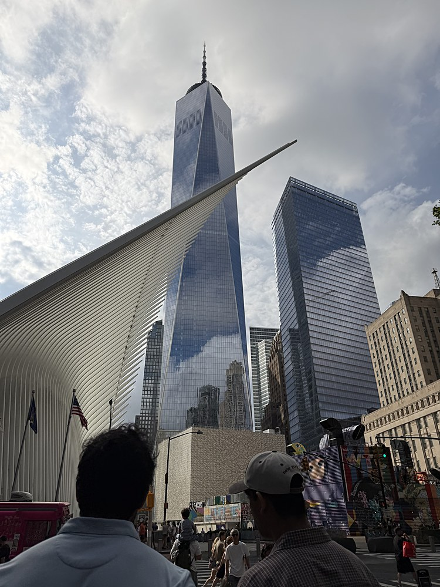
Can sharpening recover a blurred image?
For this test, I start with the sharp NYC image, blur it with the same Gaussian, then apply the unsharp mask to that blurred image. Sharpening brings back some edge contrast, but cannot fully restore detail removed by the blur. Pixel MSE against the sharp original decreases from 0.002524 for the blurred image to 0.001978 at α = 1 and 0.001698 at α = 2 (lower is closer by this metric). The best tested value improves similarity, although the result remains visibly softer than the original.
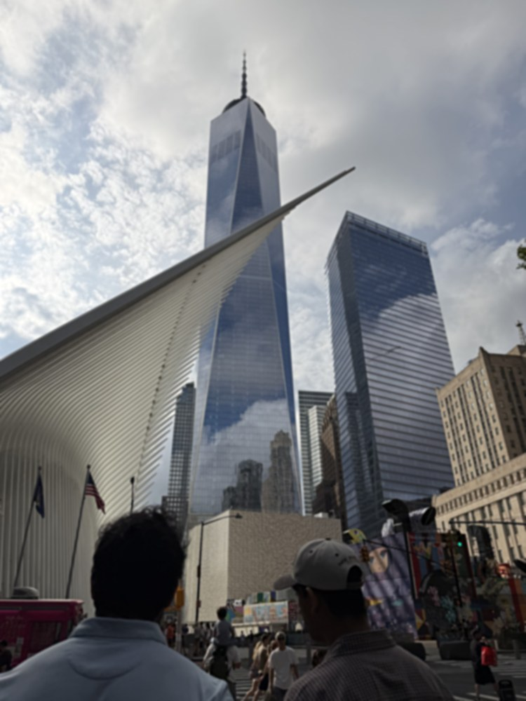
Part 2 · Fun with Frequencies
2.2 Hybrid Images
A hybrid image combines the sharp, high-frequency details of one aligned image with the broad, low-frequency structure of another. The fine details dominate when viewed close up; from farther away, those details blur together and the low-frequency image becomes easier to see. I create the high-frequency layer by subtracting a Gaussian-blurred image, create the low-frequency layer by Gaussian blurring, then add the two layers.
Derek and Nutmeg · full process
Nutmeg supplies the high frequencies and Derek supplies the low frequencies. I align the cat’s eyes with Derek’s eyes, then crop both aligned images to the same region. I use Gaussian standard deviations σhigh = 4 and σlow = 7 pixels. The cutoff sweep compares nearby values; the selected pair keeps Nutmeg’s fine facial detail while retaining Derek’s overall face shape.
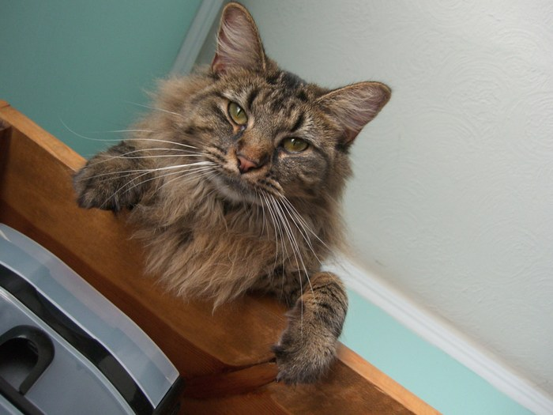
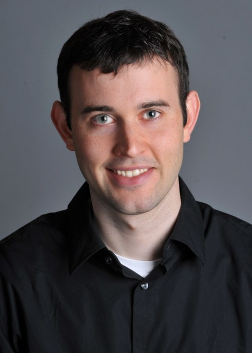
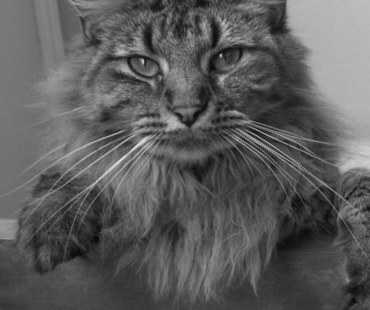
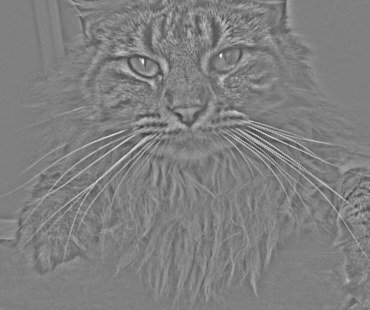
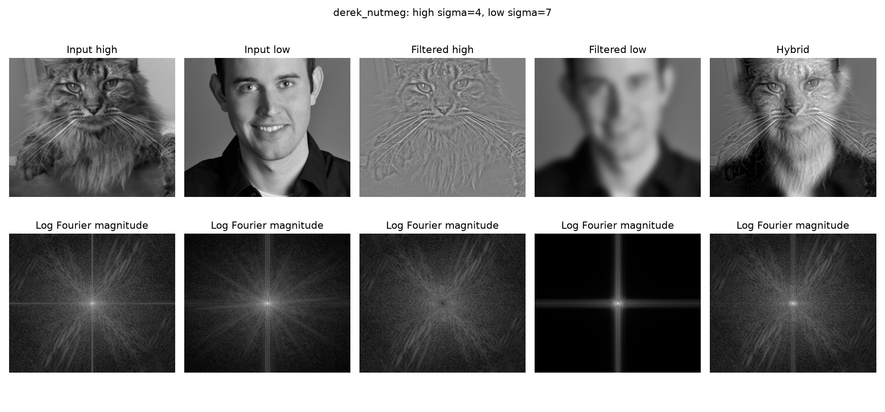
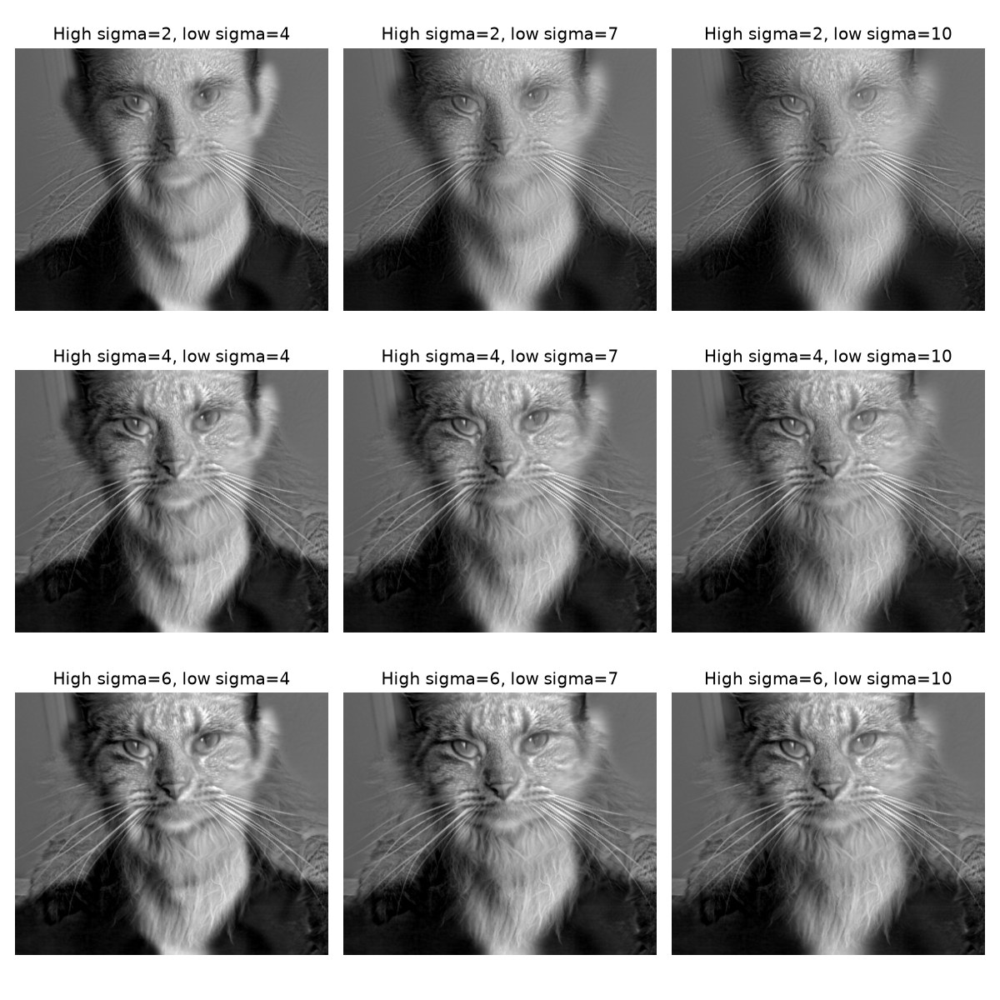
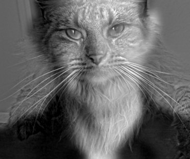
The Fourier visualization shows the aligned inputs, the filtered high- and low-frequency components, and their centered log-magnitude spectra. The low-pass spectrum concentrates energy near the center, while the high-pass component emphasizes frequencies farther from the center. The cutoff grid shows how changing the two Gaussian scales changes the near/far balance.
Smile and neutral expression
The smiling face contributes high frequencies and the neutral expression contributes low frequencies. The result reads as a smile up close and a more neutral expression when reduced or viewed from farther away.
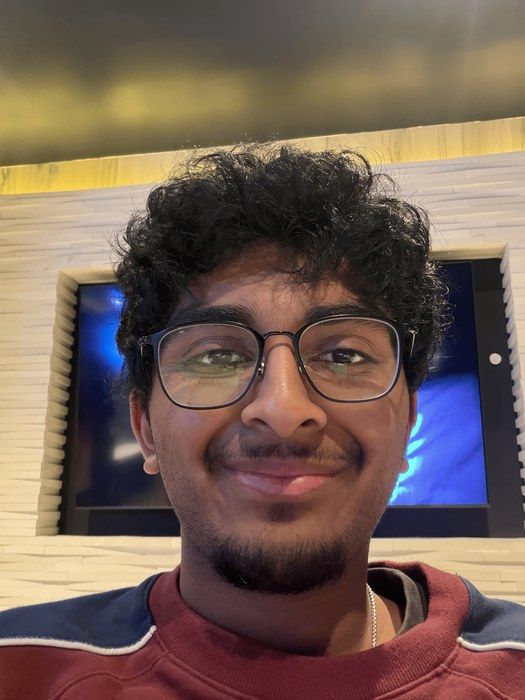
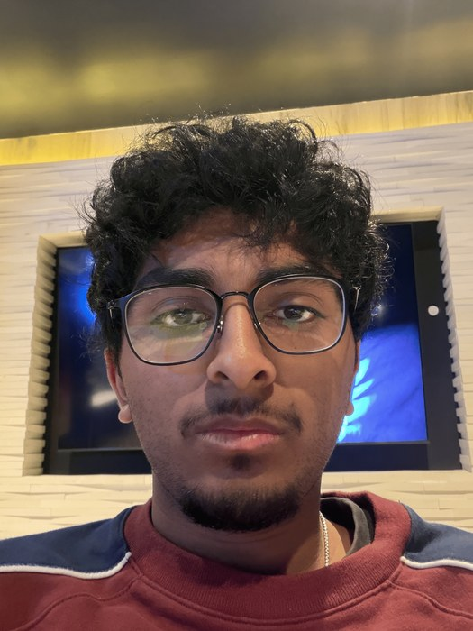
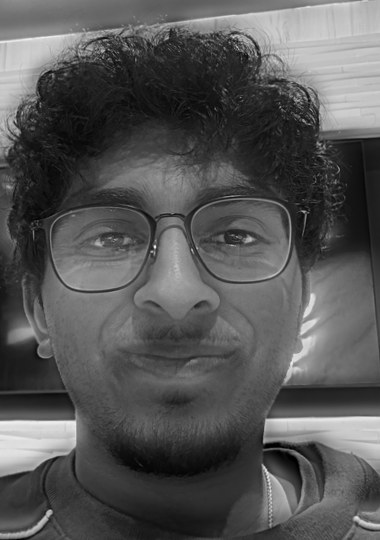
Lion and cat
The lion contributes high-frequency detail, and the cat contributes low-frequency structure. I rotated and aligned the slanted cat to the upright lion before applying the filters, then used σhigh = 2 and σlow = 4 for this pair.
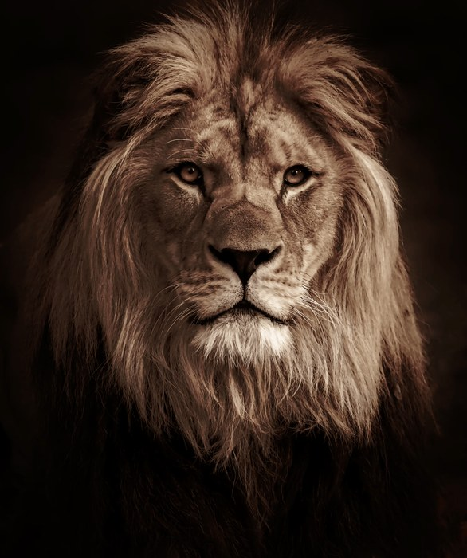

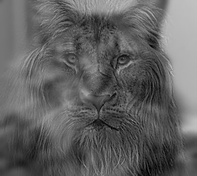
Part 2 · Fun with Frequencies
2.3 Gaussian and Laplacian Stacks
A stack progressively blurs an image while keeping every level at the original dimensions. Unlike a pyramid, it never downsamples. I use six levels for the supplied apple and orange images. Each Gaussian level is made by blurring the preceding level with a Gaussian whose standard deviation doubles from 2 pixels up to 32 pixels.
For each level except the last, the Laplacian stack stores the difference between adjacent Gaussian levels: Li = Gi − Gi+1. This isolates detail at different scales. The final Laplacian level stores the coarsest Gaussian as a residual, so summing all six Laplacian levels reconstructs the original image. Here, reconstruction error is at most 1.1 × 10−16 per channel, which is floating-point roundoff.
Apple and orange stacks
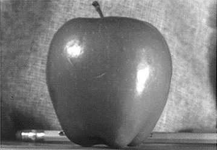
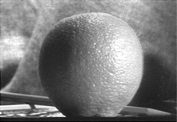
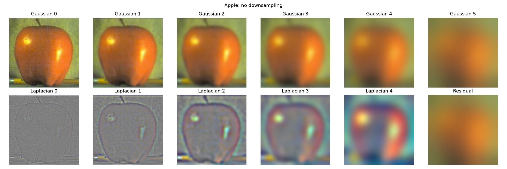
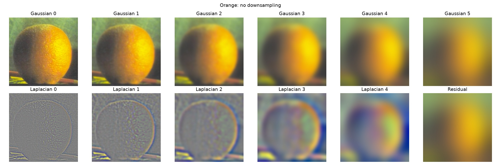
In the Gaussian rows, fine texture fades and broader shapes remain as the level increases. The Laplacian rows show the details removed between neighboring Gaussian levels. Signed Laplacian values are displayed with zero at middle gray; this display scaling is only for visualization and is not used in the reconstruction.
Recreating Figure 3.42 (a)–(l)
I use a vertical half-image mask and build a Gaussian stack for the mask as well. At each frequency level, the apple’s Laplacian detail is weighted by the mask, and the orange’s detail by its complement. The top three rows show the masked apple, masked orange, and combined contributions at levels 0, 2, and 4. The bottom row sums all six levels for those same three columns.
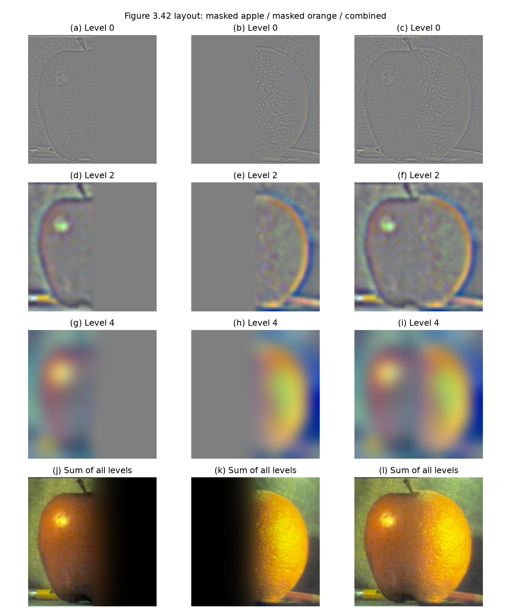
The finest-level transition stays narrow around the seam, while broader levels blend across a wider region. Together they make a smoother join than a direct splice.
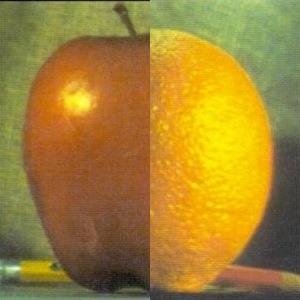
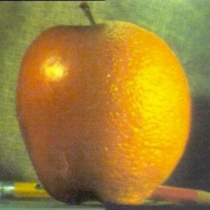
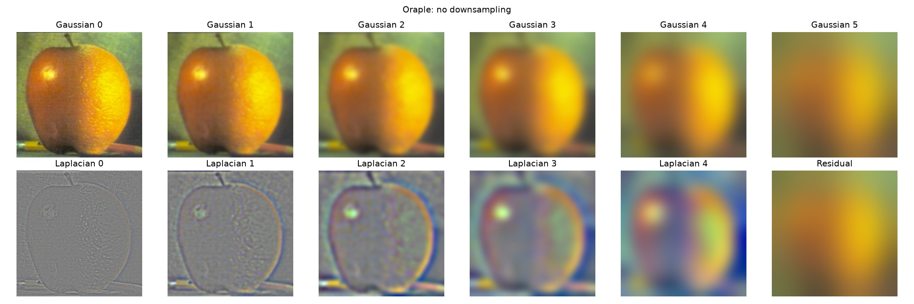
def gaussian_stack(image, levels=6):
stack = [image]
for level in range(1, levels):
sigma = 2 * 2**(level-1)
stack.append(gaussian_blur(stack[-1], sigma))
return stack
def laplacian_stack(gaussian):
detail = [gaussian[i]-gaussian[i+1] for i in range(len(gaussian)-1)]
return detail + [gaussian[-1]] # coarsest residualThe stack construction and Figure 3.42 panels are generated by gl_stack.py. The next section uses the same stacks and Gaussian mask to blend custom image pairs.
Part 2 · Fun with Frequencies
2.4 Multiresolution Blending
Multiresolution blending softens a seam at several spatial scales. For each input image, I build a Laplacian stack; for the selection mask, I build a Gaussian stack. At level i, the result is MiLA,i + (1 − Mi)LB,i. Summing the blended levels, including the coarsest residual, produces the final image. The mask changes gradually at broad scales, but fine details remain sharply selected on their original side of the seam.
All stacks keep the same image dimensions and are built without downsampling. White mask values select image A; black values select image B. I use a six-level stack for the supplied apple/orange images and seven levels for the larger custom blends.
Apple and orange
The supplied apple and orange images form the baseline vertical-seam example. The comparison shows why the Gaussian mask stack matters: a direct splice has a hard boundary, and a single-scale feather blurs the entire transition, while the multiresolution blend handles fine texture and broad color changes at different scales.
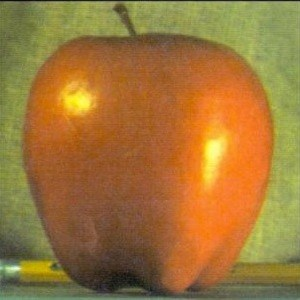
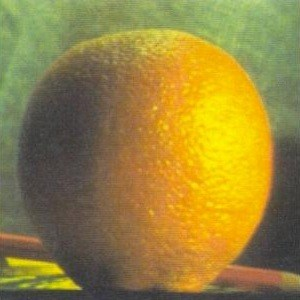
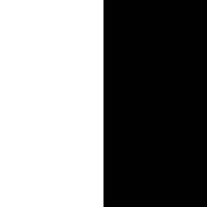
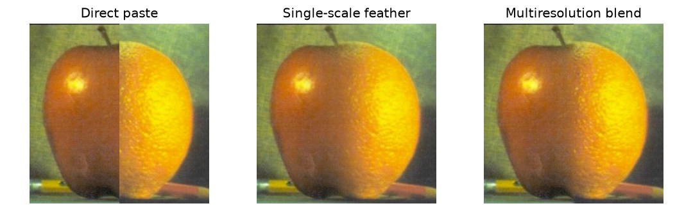
Ferrari front and Porsche rear
This custom blend combines the Ferrari’s front half with the Porsche’s rear half using a curved seam. I align the Porsche by mapping its two wheel centers and a roof point to corresponding Ferrari landmarks, then use the irregular mask x < 420 + 22 sin((y − 220)/85). The output is 800 × 450 pixels, with seven stack levels and an initial Gaussian σ = 2.
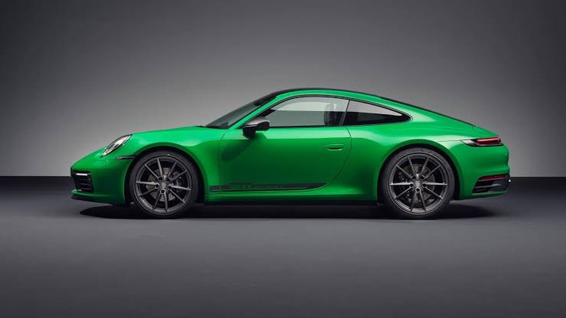
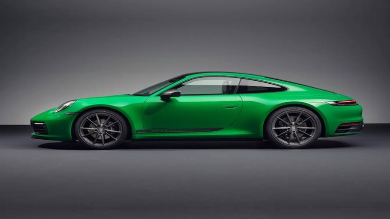
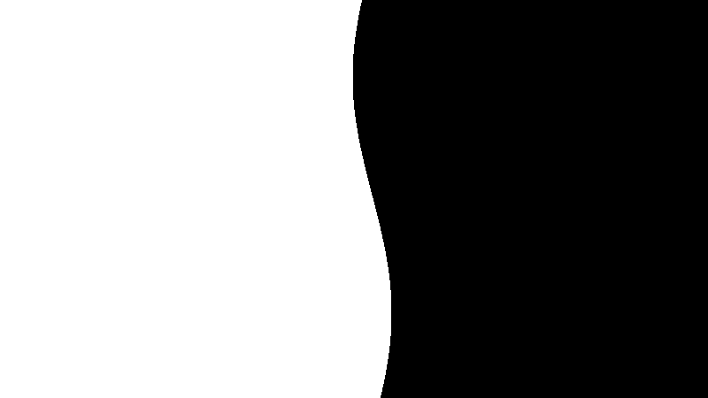
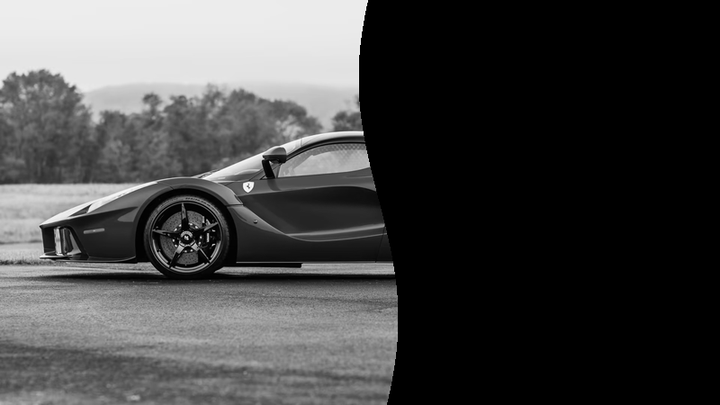
The stack visualizations show both Laplacian stacks and the Gaussian mask at every level, followed by each masked contribution and their combined band. Signed detail bands are contrast-scaled around gray for display; the calculation uses the unscaled floating-point values.
The curved seam and landmark alignment make the car bodies meet more smoothly. The outdoor and studio backgrounds still differ in lighting and texture, so the blend cannot make the surrounding scenes geometrically consistent.
Boeing 737 and private jet
For the second custom pair, the Boeing occupies the left side and the private jet the right. Three cockpit/nose landmarks align the smaller private-jet image to the Boeing on an 800 × 450 canvas. The mask follows the fuselage and curves near the ground to keep the ground worker on the Boeing side: x < 400 + 50 exp(−((y − 420)/55)2). This is a seven-level blend with an initial σ = 2.
The multiresolution result softens brightness and color differences around the fuselage, though the sources still differ in engine placement, wing shape, and background. The private-jet source is also smaller, so its portion appears softer after alignment.
These examples show the tradeoff between seam smoothness and source compatibility: the Gaussian mask stack hides abrupt boundaries, but alignment and similar lighting still determine whether the combined objects look like one coherent scene.
Project reflection
What I learned
The most important thing I learned is that image processing is about controlling which spatial scales survive. Filters separate detail from structure, and recombining those scales can sharpen an image, change how it is seen, or hide a seam. Choosing the scale and mask matters as much as choosing the filter.